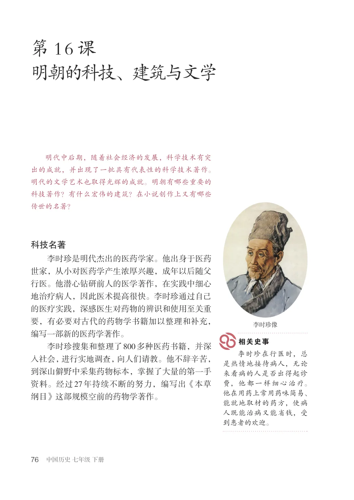
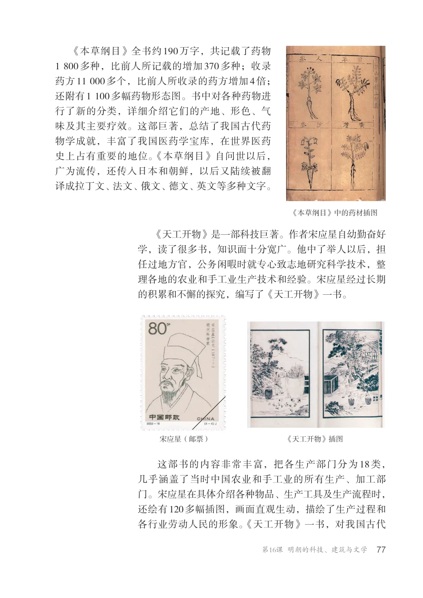
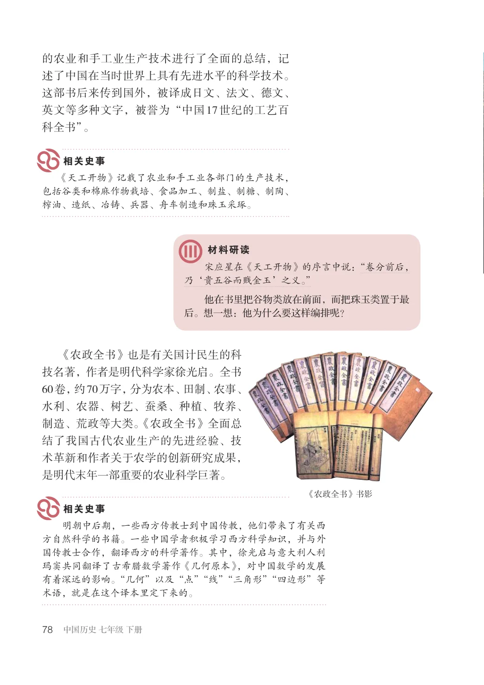
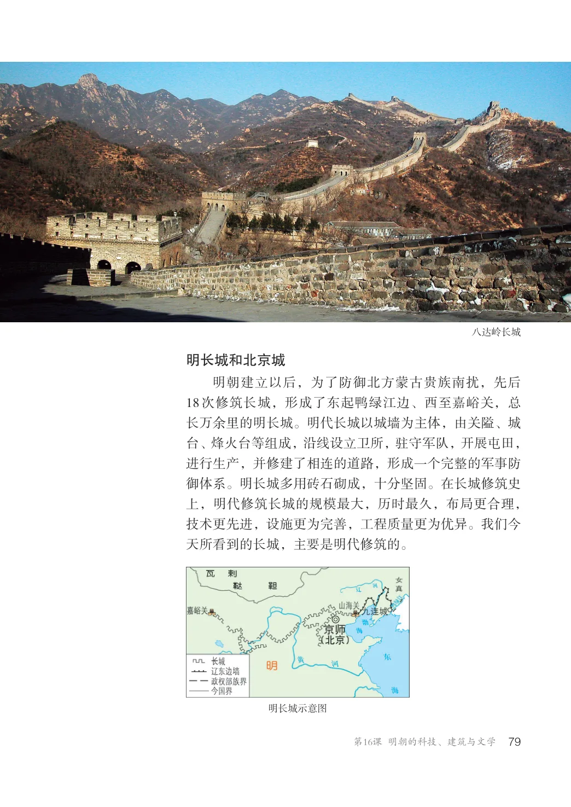
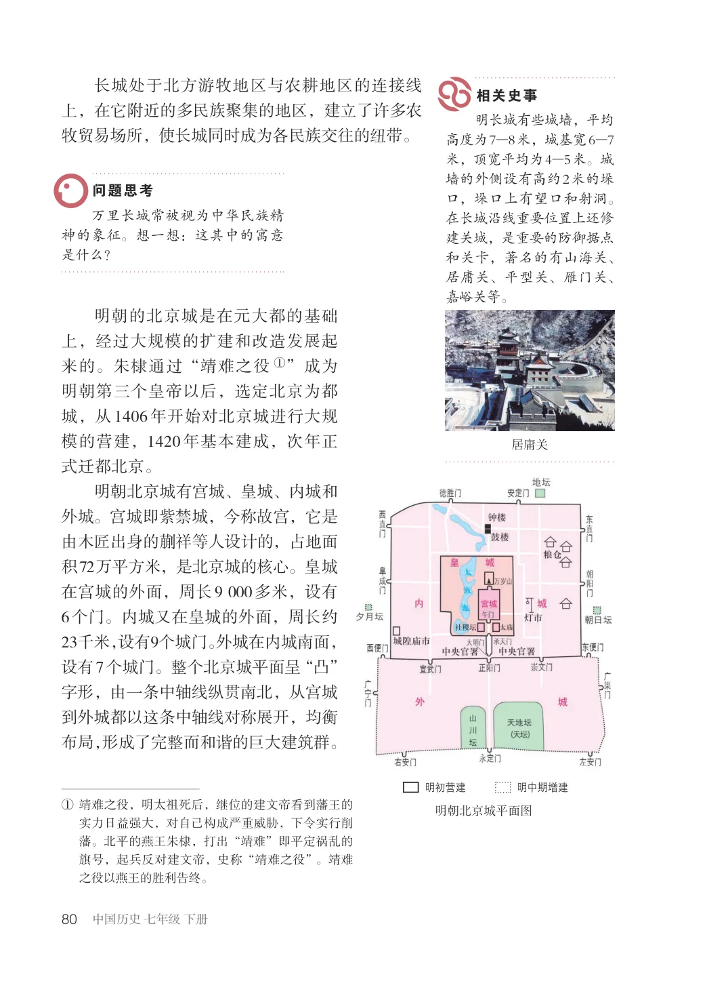
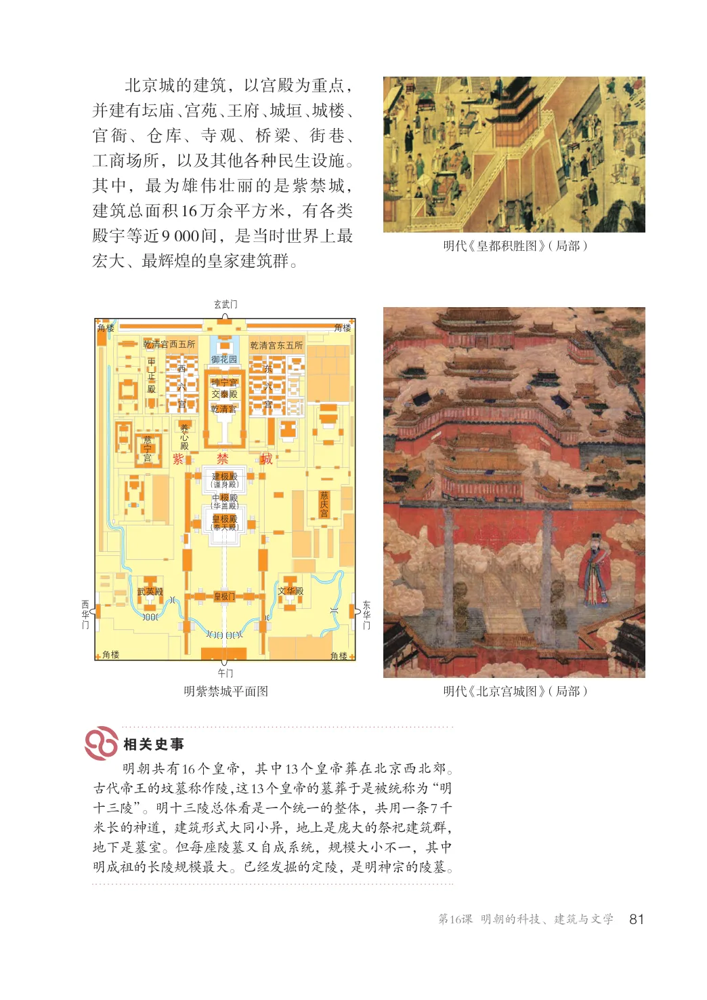
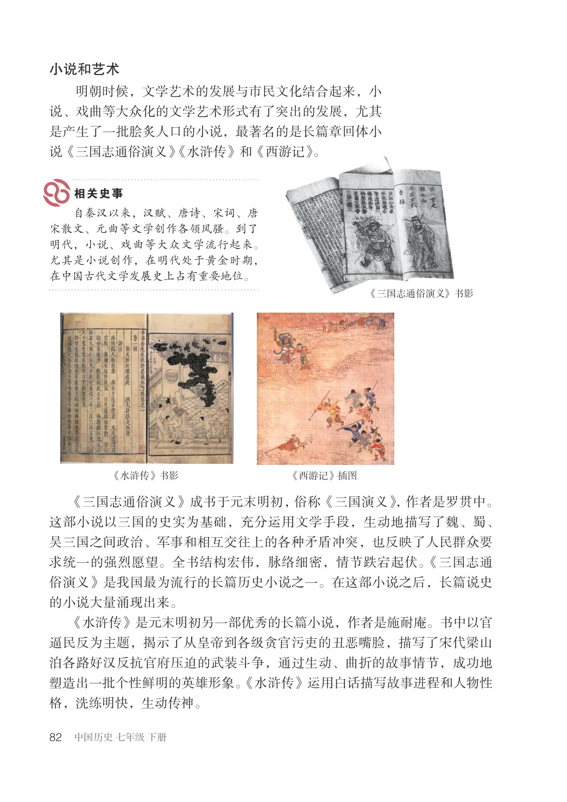
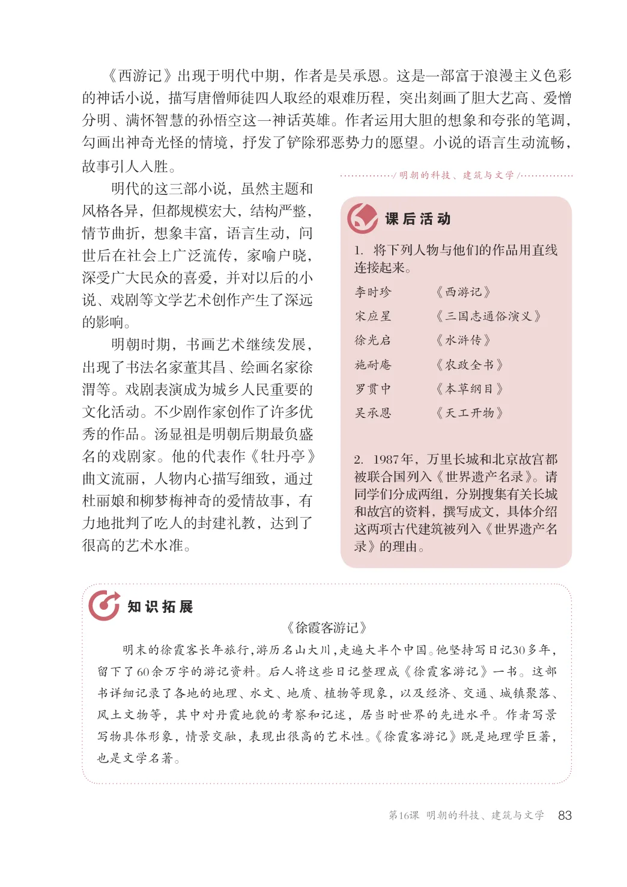

第3单元 · 教材第 76–83 页
第16课 明朝的科技、建筑与文学
文字版依据教材 PDF 文本层整理；复杂地图、图表及版面关系请以右侧教材原页为准。
明代中后期，随着社会经济的发展，科学技术有突出的成就，并出现了一批具有代表性的科学技术著作。明代的文学艺术也取得光辉的成就。明朝有哪些重要的科技著作？有什么宏伟的建筑？在小说创作上又有哪些传世的名著？
科技名著
李时珍是明代杰出的医药学家。他出身于医药世家，从小对医药学产生浓厚兴趣，成年以后随父行医。他潜心钻研前人的医学著作，在实践中细心地治疗病人，因此医术提高很快。李时珍通过自己的医疗实践，深感医生对药物的辨识和使用至关重要，有必要对古代的药物学书籍加以整理和补充，编写一部新的医药学著作。李时珍搜集和整理了800多种医药书籍，并深入社会，进行实地调查，向人们请教。他不辞辛苦，到深山僻野中采集药物标本，掌握了大量的第一手资料。经过27年持续不断的努力，编写出《本草纲目》这部规模空前的药物学著作。
李时珍像
李时珍在行医时，总是热情地接待病人，无论来看病的人是否出得起诊费，他都一样细心治疗。他在用药上常用药味简易、能就地取材的药方，使病人既能治病又能省钱，受到患者的欢迎。

《本草纲目》全书约190万字，共记载了药物1800多种，比前人所记载的增加370多种；收录药方11000多个，比前人所收录的药方增加4倍；还附有1100多幅药物形态图。书中对各种药物进行了新的分类，详细介绍它们的产地、形色、气味及其主要疗效。这部巨著，总结了我国古代药物学成就，丰富了我国医药学宝库，在世界医药史上占有重要的地位。《本草纲目》自问世以后，广为流传，还传入日本和朝鲜，以后又陆续被翻译成拉丁文、法文、俄文、德文、英文等多种文字。
《本草纲目》中的药材插图
《天工开物》是一部科技巨著。作者宋应星自幼勤奋好学，读了很多书，知识面十分宽广。他中了举人以后，担任过地方官，公务闲暇时就专心致志地研究科学技术，整理各地的农业和手工业生产技术和经验。宋应星经过长期的积累和不懈的探究，编写了《天工开物》一书。
《天工开物》插图宋应星（邮票）
这部书的内容非常丰富，把各生产部门分为18类，几乎涵盖了当时中国农业和手工业的所有生产、加工部门。宋应星在具体介绍各种物品、生产工具及生产流程时，还绘有120多幅插图，画面直观生动，描绘了生产过程和各行业劳动人民的形象。《天工开物》一书，对我国古代

的农业和手工业生产技术进行了全面的总结，记述了中国在当时世界上具有先进水平的科学技术。这部书后来传到国外，被译成日文、法文、德文、英文等多种文字，被誉为“中国17世纪的工艺百科全书”。
《天工开物》记载了农业和手工业各部门的生产技术，包括谷类和棉麻作物栽培、食品加工、制盐、制糖、制陶、榨油、造纸、冶铸、兵器、舟车制造和珠玉采琢。
宋应星在《天工开物》的序言中说：“卷分前后，乃‘贵五谷而贱金玉’之义。”他在书里把谷物类放在前面，而把珠玉类置于最后。想一想：他为什么要这样编排呢？
《农政全书》也是有关国计民生的科技名著，作者是明代科学家徐光启。全书60卷，约70万字，分为农本、田制、农事、水利、农器、树艺、蚕桑、种植、牧养、制造、荒政等大类。《农政全书》全面总结了我国古代农业生产的先进经验、技术革新和作者关于农学的创新研究成果，是明代末年一部重要的农业科学巨著。
《农政全书》书影
明朝中后期，一些西方传教士到中国传教，他们带来了有关西方自然科学的书籍。一些中国学者积极学习西方科学知识，并与外国传教士合作，翻译西方的科学著作。其中，徐光启与意大利人利玛窦共同翻译了古希腊数学著作《几何原本》，对中国数学的发展有着深远的影响。“几何”以及“点”“线”“三角形”“四边形”等术语，就是在这个译本里定下来的。

八达岭长城
明长城和北京城
明朝建立以后，为了防御北方蒙古贵族南扰，先后18次修筑长城，形成了东起鸭绿江边、西至嘉峪关，总长万余里的明长城。明代长城以城墙为主体，由关隘、城台、烽火台等组成，沿线设立卫所，驻守军队，开展屯田，进行生产，并修建了相连的道路，形成一个完整的军事防御体系。明长城多用砖石砌成，十分坚固。在长城修筑史上，明代修筑长城的规模最大，历时最久，布局更合理，技术更先进，设施更为完善，工程质量更为优异。我们今天所看到的长城，主要是明代修筑的。
明长城示意图

长城处于北方游牧地区与农耕地区的连接线上，在它附近的多民族聚集的地区，建立了许多农牧贸易场所，使长城同时成为各民族交往的纽带。
明长城有些城墙，平均高度为7—8米，城基宽6—7米，顶宽平均为4—5米。城墙的外侧设有高约2米的垛口，垛口上有望口和射洞。在长城沿线重要位置上还修建关城，是重要的防御据点和关卡，著名的有山海关、居庸关、平型关、雁门关、嘉峪关等。
万里长城常被视为中华民族精神的象征。想一想：这其中的寓意是什么？
明朝的北京城是在元大都的基础上，经过大规模的扩建和改造发展起来的。朱棣通过“靖难之役①”成为明朝第三个皇帝以后，选定北京为都城，从1406年开始对北京城进行大规模的营建，1420年基本建成，次年正式迁都北京。明朝北京城有宫城、皇城、内城和外城。宫城即紫禁城，今称故宫，它是由木匠出身的蒯祥等人设计的，占地面积72万平方米，是北京城的核心。皇城在宫城的外面，周长9000多米，设有6个门。内城又在皇城的外面，周长约23千米，设有9个城门。外城在内城南面，设有7个城门。整个北京城平面呈“凸”字形，由一条中轴线纵贯南北，从宫城到外城都以这条中轴线对称展开，均衡布局，形成了完整而和谐的巨大建筑群。
明初营建明中期增建
①靖难之役，明太祖死后，继位的建文帝看到藩王的实力日益强大，对自己构成严重威胁，下令实行削藩。北平的燕王朱棣，打出“靖难”即平定祸乱的旗号，起兵反对建文帝，史称“靖难之役”。靖难之役以燕王的胜利告终。
明朝北京城平面图

北京城的建筑，以宫殿为重点，并建有坛庙、宫苑、王府、城垣、城楼、官衙、仓库、寺观、桥梁、街巷、工商场所，以及其他各种民生设施。其中，最为雄伟壮丽的是紫禁城，建筑总面积16万余平方米，有各类殿宇等近9000间，是当时世界上最宏大、最辉煌的皇家建筑群。
明代《皇都积胜图》（局部）
角楼角楼
乾清宫西五所乾清宫东五所
坤宁宫交泰殿
紫禁城
建极殿 (谨身殿)
(华盖殿)
(奉天殿)
角楼角楼
明紫禁城平面图
明代《北京宫城图》（局部）
明朝共有16个皇帝，其中13个皇帝葬在北京西北郊。古代帝王的坟墓称作陵，这13个皇帝的墓葬于是被统称为“明十三陵”。明十三陵总体看是一个统一的整体，共用一条7千米长的神道，建筑形式大同小异，地上是庞大的祭祀建筑群，地下是墓室。但每座陵墓又自成系统，规模大小不一，其中明成祖的长陵规模最大。已经发掘的定陵，是明神宗的陵墓。

小说和艺术
明朝时候，文学艺术的发展与市民文化结合起来，小说、戏曲等大众化的文学艺术形式有了突出的发展，尤其是产生了一批脍炙人口的小说，最著名的是长篇章回体小说《三国志通俗演义》《水浒传》和《西游记》。
自秦汉以来，汉赋、唐诗、宋词、唐宋散文、元曲等文学创作各领风骚。到了明代，小说、戏曲等大众文学流行起来。尤其是小说创作，在明代处于黄金时期，在中国古代文学发展史上占有重要地位。
《三国志通俗演义》书影
《水浒传》书影
《西游记》插图
《三国志通俗演义》成书于元末明初，俗称《三国演义》，作者是罗贯中。这部小说以三国的史实为基础，充分运用文学手段，生动地描写了魏、蜀、吴三国之间政治、军事和相互交往上的各种矛盾冲突，也反映了人民群众要求统一的强烈愿望。全书结构宏伟，脉络细密，情节跌宕起伏。《三国志通俗演义》是我国最为流行的长篇历史小说之一。在这部小说之后，长篇说史的小说大量涌现出来。《水浒传》是元末明初另一部优秀的长篇小说，作者是施耐庵。书中以官逼民反为主题，揭示了从皇帝到各级贪官污吏的丑恶嘴脸，描写了宋代梁山泊各路好汉反抗官府压迫的武装斗争，通过生动、曲折的故事情节，成功地塑造出一批个性鲜明的英雄形象。《水浒传》运用白话描写故事进程和人物性格，洗练明快，生动传神。

《西游记》出现于明代中期，作者是吴承恩。这是一部富于浪漫主义色彩的神话小说，描写唐僧师徒四人取经的艰难历程，突出刻画了胆大艺高、爱憎分明、满怀智慧的孙悟空这一神话英雄。作者运用大胆的想象和夸张的笔调，勾画出神奇光怪的情境，抒发了铲除邪恶势力的愿望。小说的语言生动流畅，/ 明朝的科技、建筑与文学/ 故事引人入胜。明代的这三部小说，虽然主题和风格各异，但都规模宏大，结构严整，情节曲折，想象丰富，语言生动，问1．将下列人物与他们的作品用直线连接起来。
世后在社会上广泛流传，家喻户晓，深受广大民众的喜爱，并对以后的小说、戏剧等文学艺术创作产生了深远的影响。
李时珍《西游记》宋应星《三国志通俗演义》徐光启《水浒传》施耐庵《农政全书》罗贯中《本草纲目》吴承恩《天工开物》
明朝时期，书画艺术继续发展，出现了书法名家董其昌、绘画名家徐渭等。戏剧表演成为城乡人民重要的文化活动。不少剧作家创作了许多优秀的作品。汤显祖是明朝后期最负盛名的戏剧家。他的代表作《牡丹亭》曲文流丽，人物内心描写细致，通过杜丽娘和柳梦梅神奇的爱情故事，有力地批判了吃人的封建礼教，达到了很高的艺术水准。
2．1987年，万里长城和北京故宫都被联合国列入《世界遗产名录》。请同学们分成两组，分别搜集有关长城和故宫的资料，撰写成文，具体介绍这两项古代建筑被列入《世界遗产名录》的理由。
《徐霞客游记》明末的徐霞客长年旅行，游历名山大川，走遍大半个中国。他坚持写日记30多年，留下了60余万字的游记资料。后人将这些日记整理成《徐霞客游记》一书。这部书详细记录了各地的地理、水文、地质、植物等现象，以及经济、交通、城镇聚落、风土文物等，其中对丹霞地貌的考察和记述，居当时世界的先进水平。作者写景写物具体形象，情景交融，表现出很高的艺术性。《徐霞客游记》既是地理学巨著，也是文学名著。
